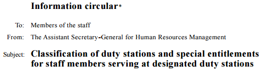
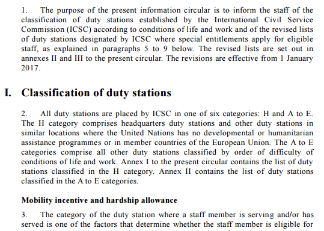
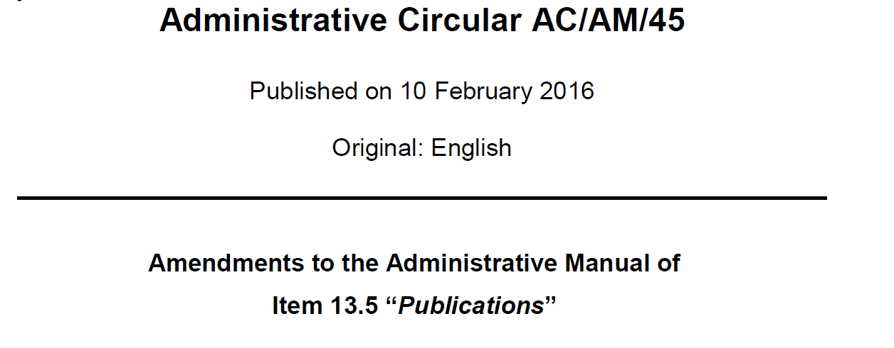
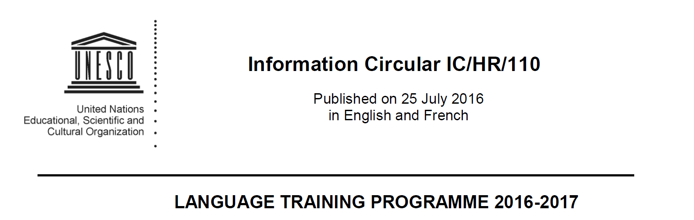
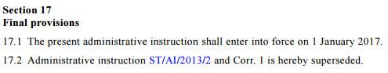
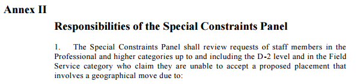
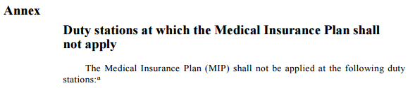

Document Class: Administrative issuances
UN document class | Administrative issuances |
subclass | Administrative Instruction Description: prescribe instructions and procedures for the implementation of rules and regulations, as well as formally communicate decisions on, for example, appointment, promotion, transfer and change of duty station. Administrative Circular Description: general information of administrative nature as well as clarifications of established rules, policies and procedures |
AKN4UN
document class: | AKN | AKN4UN | UN Document | AKN4UN |
documentType
mandatory | subtype
mandatory | sub-class | @name subclass mandatory |
| value is prescribed | | value is suggested |
administrative issuances | <statement> | instruction | administrative instruction | administrativeInstruction |
administrative circular | administrativeCircular |
function | Function administrative instructions and circulars. Structure structures vary widely across organizations and traditions but may have the format of a formal communication with a title and content in unnumbered or numbered paragraphs or be divided into sections. |
authors | Secretariats of organizations and agencies, managers and directors generals of organizations and agencies. |
editors | Documentation and publishing divisions of organizations and agencies. |
Caveat. What follows is the modelling and description of the "Administrative Issuance" (logical administrative isuance) that is not specific to the administrative isuance of any organization in particular. It does list all the possible characteristics that administrative isuancess may have across all the UN organizations, since the objective is to cover all the variances that may exist. The description and modelling of the publications in which a administrative isuance may be published is presented in the "Publication Document Class".
The Administrative Isuance Document Class will have to be localised by the different organizations, based on their specific editorial and style traditions, by selecting only the elements that are required to model all the relevant structural and semantic parts of a specific typology of administrative isuance.
Please note that the XML examples provided in the next sections should not be considered complete. Examples show only the essential structural elements of the mark-up and only the ones relevant in a specific context without any semantic or presentation markup in order to keep the XML "humanly’" readable.
The structure of an administrative issuance may have the following elements:
| Identification part Sender, addressee, title, subject etc. | Always present | |
Preamble One or more paragraphs stating purpose, aims, etc. | not always present. |
| Main Content Paragraphs may be numbered. Subdivision follow different organization specific editorial traditions. | Always present. | |
| Conclusions Signature, title. etc. | Not always present. | |
| Annexes May have annexes and attachments | Not always present. | |
document type | <akomantoso> <statement name="{ak4un:subclass}"> |
metadata | <meta> <identification source="#{manifestatonAuthor}"> </identification> </meta> |
identification part | <preface> (...) </preface> |
justificatory text | <preamble> (...) </preamble> |
bodyblock | <mainBody> (...) </mainBody> |
conclusion | <conclusions> (...) </conclusions> |
annexes | <attachments> (...) </attachments> |
| </statement> </akomaNtoso> |
Administrative Circular:
document type | <akomaNtoso> <statement name="administrativeCircular"> | |
identification part | <preface> (...) </preface> |  | |
preamble | <preamble> ……… </preamble> |  |
body | <mainBody> (...) </mainBody> | | |
annexes | <attachments> (...) </attachments> | 
| |
| </statement> </akomaNtoso> |
Identification part: <preface>
The identification part <preface> </preface> is meant to include any matter found from the very beginning of a document up to where the <preamble> or the <mainBody> begins. It may contain information related to the title of the document, sender, addressee identification numbers, date and the like.
Administrative issuance may have some or all the info below information, not necessarily in the same order:
document type
sender
addressee
title
subject
date
identifier
language
For information about element specific usage, see 1.2 <preface>.
|
source |
|
modelling | <preface> <p> <docType>Information circular</docType> <authorialNote marker="*" placement="bottom"> <p>The present circular will be in effect until further notice</p> </authorialNote> <inline name="to" refersTo="#membersStaff">To: Members of the staff</inline> <inline name="from" refersTo="#assistantSegreatryGeneralHRM"> From: The Assistant Secretary-General for Human Resources Management</inline> Subject: <docTitle> Classification of duty stations and special entitlements for staff members serving at designated duty stations</docTitle> </p> </preface> |
notes | |
|
source |
|
modelling | <preface> <p> <docType>Administrative instruction</docType> <docTitle>Medical insurance plan for locally recruited staff at designated duty stations away from Headquarters</docTitle> </p> </preface> |
notes | |
|
source |  |
modelling | <preface> <p> <docType>Administrative Circular</docType> <docNumber>AC/AM/45</docNumber> Published on <docDate date="2016-02-10" refersTo="#published"> 10 February 2016</date> <inline refersTo="#english" name="originalLanguage">Original: English</inline> <docTitle>Amendments to the Administrative Manual of <ref href="/akn/un/{documentIRIparts}">Item 13.5 "Publication"</ref> </docTitle> </p> </preface> |
The justificatory text <preamble> </preamble> is meant to include any matter found after the <preface> up to where the <mainBody> begins. It may contain one or more paragraphs stating purpose, aims, and justification of a administrative issuance.
For information about element specific usage, see section 1.4 <preamble>.
|
source | |
modelling | <preamble> <container name=""> <p> The Under-Secretary-General for Management, pursuant to section 4.2 of Secretary-General’s bulletin ST/SGB/1997/1, and for the purpose of implementing staff regulation 1.1 (f), staff rules 101.2 (c), 201.2 (c) and 301.3 (c), hereby promulgates the following: </p> </container> </preamble> |
notes | |
|
|
source |  |
modelling | <preface> <p> <docType> Information Circular</docType> <docNumber> IC/HR/110</docNumber> <date date="2016-07-25" refersTo="#published">Published on 25 of July 2016</date> in <inline refersTo="#english" name="officialLanguage">English</inline> and <inline refersTo="#franch" name="officialLanguage">French</inline> <docTitle>LANGUAGE TRAINING PROGRAMME 2016-2017</docTitle> </p> </preface> |
notes | |
|
The operative block <mainBody> </mainBody> is meant to include any matter found after the <preface> or <preamble> up to where the <conclusion> or <attachments> or the end of the document. It contain one or more paragraphs stating the opinion of the organ or the action to be taken.
Paragraphs may be numbered. Subdivisions follow different organization specific editorial traditions.
Paragraphs are usually numbered with Arabic numerals. Numbering may be continuous or restart at each main subdivision. Subdivisions are often identified with Roman numerals while lower level subdivisions may not include numbering and/or run-in subheadings. Generally, the first paragraph gives an indication of the context (justification, purpose, background).
The <mainBody> element may contains all types of AKN groups of elements. In the conctext of Document Class Administrative Issuances, only hierarchical and block containers elements are allowed. See the table below:
AKN4UN
Doc Class | AKN
document type | body element | Supported elements |
Administrative Issuance | <statement> | <mainBody> | Element group: hierElements alinea, article, book, chapter, clause, division, hcontainer, indent, level, list, paragraph, part, point, proviso, rule, section, subchapter, subclause, subdivision, sublist, subparagraph, subpart, subrule, subsection, subtitle, title, tome, transitional |
Element group: blockElements block, blockContainer, blockList, foreign, ol, p, table, tblock, toc, ul |
For the content model used by hierarchical and block containers, please see relevant sections.
|
source | |
modelling | <mainBody> <paragraph eId="para_1" refersTo="#preamble"> <num>1.</num> <content> <p>The purpose of the present information circular is to inform the staff of the classification of duty stations established by the International Civil Service Commission (ICSC) according to conditions of life and work and of the revised lists of duty stations designated by ICSC where special entitlements apply for eligible staff, as explained in paragraphs 5 to 9 below. The revised lists are set out in annexes II and III to the present circular. The revisions are effective from 1 January 2017.</p> </content> </paragraph> </mainBody> |
notes | In this case the numbered paragraph is part of the "body" but was qualified as "preambular" because of the specific function that it is meant to have. |
|
source | |
modelling | <mainBody> <section eId="sec_3"> <num>Section 3</num> <heading>Dependent child or children </heading> <division eId="sec_3__div_1"> <heading>Dependency status of a child or children</heading> <subsection eId="sec_3__div_1__subsec_3-1"> <num>3.1</num> <list eId="sec_3__div_1__subsec_3-1__list_1"> <intro> <p>In accordance with staff rule 3.6 (b), a natural child, a legally adopted child, or a stepchild, provided the stepchild resides with the staff member, shall be recognized as a dependent child when the following conditions are met:</p> </intro> <point eId="sec_3__div_1__subsec_3-1__list_1__point_a"> <num>(a)</num> <content> <p> The child is under 18 years of age or, if in full-time attendance at school, university or a similar educational institution, under 21 years of age; and</p> </content> </point> <point eId="sec_3__div_1__subsec_3-1__list_1__point_b"> <num>(b)</num> <list eId="sec_3__div_1__subsec_3-1__list_1__point_b__list_1"> <intro> <p> The staff member establishes that he or she provides main and continuous support to the child. This shall be done by the staff member’s submitting a certification of financial support by the staff member that is equal to or greater than the amount of the dependent child allowance. Such certifica tion must be supported by documentary evidence satisfactory to the Secretary-General, if a child:</p> </intro> <point eId="sec_3__div_1__subsec_3-1__list_1__point_b__list_1__point_i"> <num>(i)</num> <content> <p>Does not reside with the staff member; </p> </content> </point> <point eId="sec_3__div_1__subsec_3-1__list_1__point_b__list_1__point_ii"> <num>(ii)</num> <content> <p>Is married; or </p> </content> </point> <point eId="sec_3__div_1__subsec_3-1__list_1__point_b__list_1__point_iii"> <num>(iii)</num> <content> <p> Is recognized as a dependant under the special conditions defined in section 3.2. </p> </content> </point> </list> </point> </list> </subsection> </division> </section> </mainBody> |
notes | |
|
source |
|
modelling | <part eId="part_II"> <num>Part II</num> <heading>Terms and conditions applicable at all duty stations </heading> <section eId="part_II__sec_3"> <num>Section 3</num> <heading>Rent paid by the staff member </heading> <division eId="part_II__sec_3__div_1"> <heading>Definition </heading> <subsection eId="part_II__sec_3__div_1__subsec_3-1"> <num>3.1</num> <content> <p>For the purposes of the present instruction, the expression "rent paid by the staff member" shall be the recurring amount indicated in the lease agreement which the staff member, as a tenant, agrees to pay for the right to live in the rent ed dwellings, minus all rebates and gratuities and charges towards, but not limited to, furniture, car parking and gym and/or club membership. No rental subsidy shall be paid to staff members who live in their own homes or do not pay rent for their dwellings.</p> </content> </subsection> </division> <division> <heading>Staff member’s obligations </heading> <subsection eId="part_II__sec_3__div_1__subsec_3-2"> <num>3.2</num> <content> <p>The staff member shall disclose to the Organization all rebates and gratuities granted to him or her by the landlord (e.g. one month’s free rent, temporary reductions in rent, etc.). These reductions will be taken into account in determining the actual monthly rent paid by apportioning such rebates over the lease term of the rental.</p> </content> </subsection> </division> </section> </part> |
notes | |
|
source |  |
modelling | <section eId="sec_17"> <num>Section 17 </num> <heading>Final provisions </heading> <subsection eId="sec_17__subsec_17-1"> <content> <p>The present administrative instruction shall enter into force on 1 January 2017. </p> </content> </subsection> <subsection eId="sec_17__subsec_17-2"> <num>17.2 </num> <content> <p>Administrative instruction ST/AI/2013/2 and Corr. 1 is hereby superseded.</p> </content> </subsection> </section> |
notes | |
|
Conclusions: <conclusions>
The closing formula <conclusions> </conclusions> is meant to include all concluding material (e.g. closing formula\s, date\s and signature\s). It is placed at the end of the main document, typically before the Annexes, if any.
For information about element specific usage, see section 1.6 <conclusions>.
|
source |
|
modelling | <conclusions> <container name=""> <p> <signature> <role refersTo="#dg">For the Director-General</role> <person refersTo="#ana.luiza.thompson-flores" as="#dbhrm">Ana Luiza Thompson-Flores</person> <role refersTo="#dbhrm">Director Bureau for Human Resource Management</role> </signature> </p> </container> </conclusions> |
notes | |
|
source |
|
modelling | <conclusions> <container name=""> <p> <signature> <docStatus refersTo="#signed">(Signed)</docStatus> <person refersTo="#yukio.Takasu" as="#underSecretaryGeneralManagement">Yukio Takasu</person> <role refersTo="#underSecretaryGeneralManagement">Under-Secretary-General for Management</role> </signature> </p> <container> <conclusions> |
notes | |
|
The annexes block <attachments> </attachments> is meant to include all annexes/attachments to an Administrative Issuance, which may have several annexes numbered typically with upper-case Roman numerals.
For information about element specific usage, see section 1.7 <attachments>.
|
source |  |
| <attachments> <attachment> <doc name="annex"> <meta> </meta> <preface> <p> <docType>Annex</docType> <docNumber>II</docNumber> <docTitle>Responsibilities of the Special Constraints Panel</docTitle> </p> </preface> <mainBody> <paragraph> <num>1.</num> <content> <p>The Special Constraints Panel shall review requests of staff members in the Professional and higher categories up to and including the D-2 level and in the Field Service category who claim they are unable to accept a proposed placement that involves a geographical move due to: </p> </content> </paragraph> </mainBody> </doc> </attachment> </attachments> |
|
Administrative Instructions:
document type | <akomaNtoso> <statement name="administrativeCircular"> | |
identification part | <preface> (...) </preface> | | |
body | <mainBody> (...) </mainBody> | | |
conclusions | <conclusions> (...) </conclusions> | | |
annexes | <attachments> (...) </attachments> |  | |
| </statement> </akomaNtoso> |